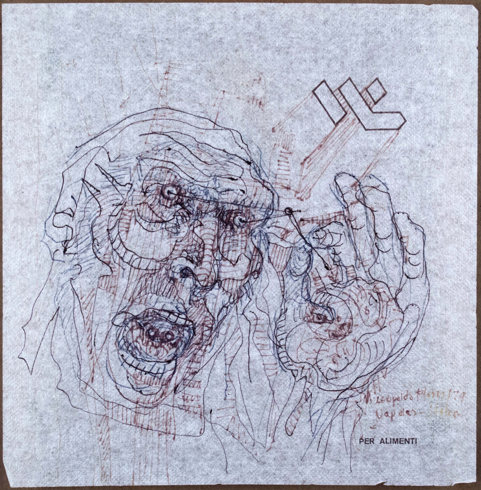
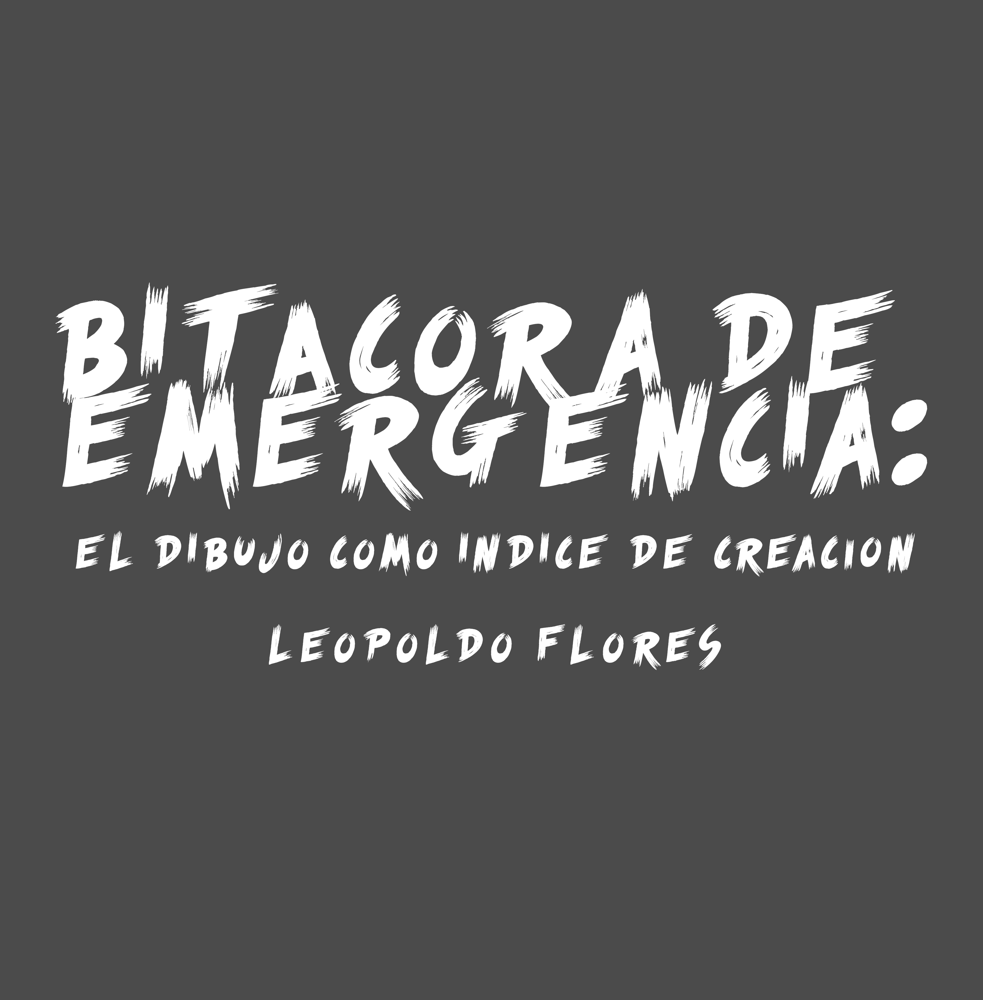
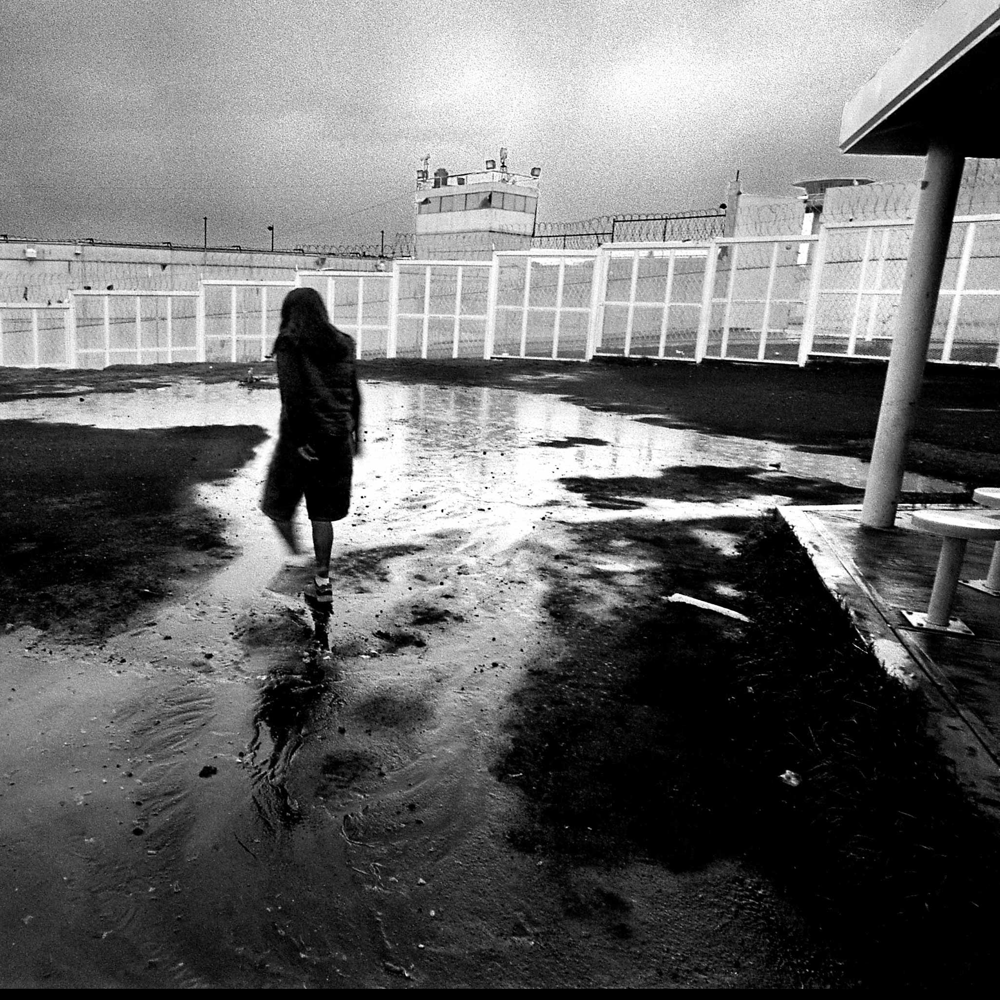

Este espacio virtual es una extensión del Museo Universitario Leopoldo Flores. Aquí podrás recorrer exposiciones en línea que amplían el acceso al arte contemporáneo desde cualquier parte del mundo.



PC / Laptop
W / ↑: Avanzar · A / ←: Izquierda · S / ↓: Retroceder · D / →: Derecha
Mouse: Mueve para mirar
Móvil / Tablet
Toca y arrastra: Para moverte · Desliza o gira el dispositivo: Para mirar
ℹ️ Posiciona la mira sobre una obra para ver su descripción y detalles.